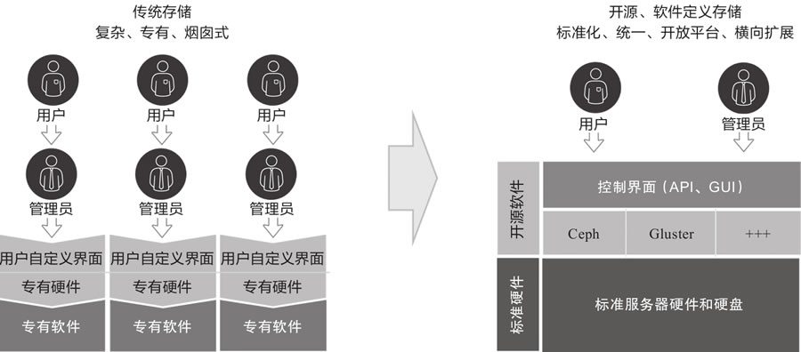
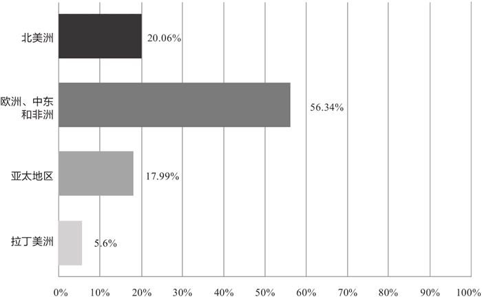
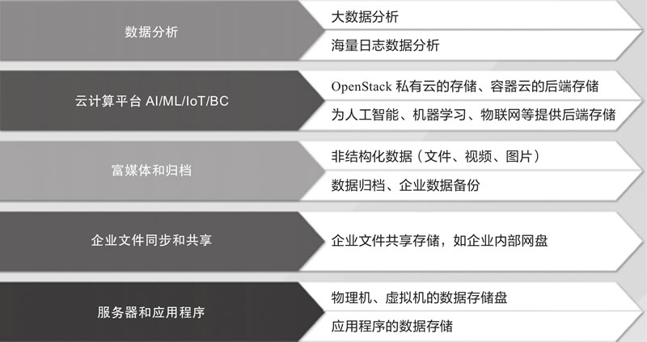
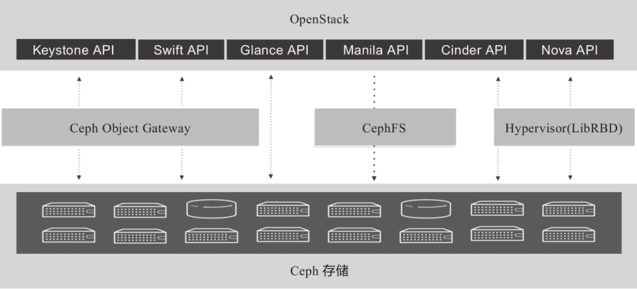
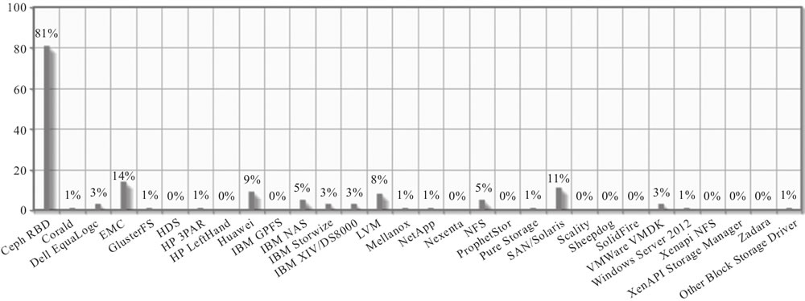
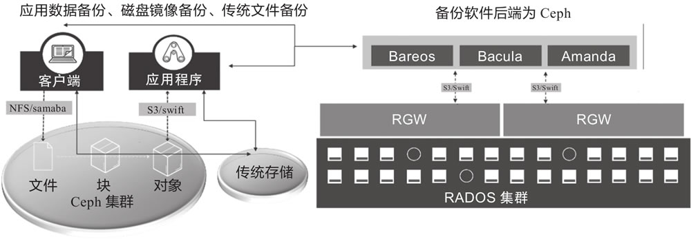
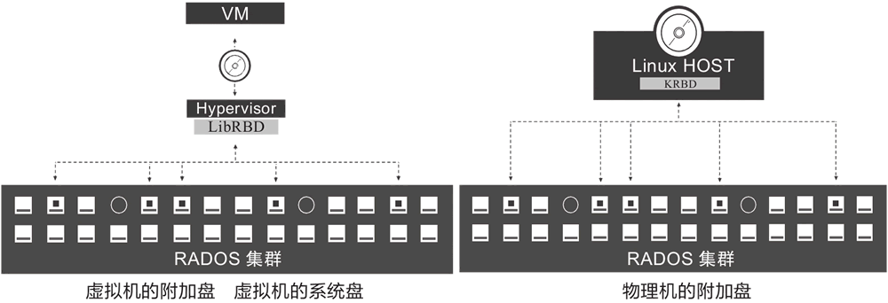
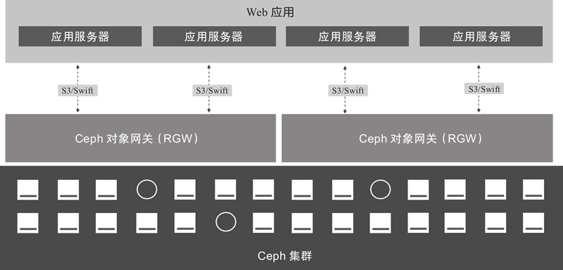

首页 > 编程笔记
Ceph分布式存储介绍（非常详细）
在云计算大潮的推动下，数据量开始激增。众多企业在考虑系统容量、性能、扩展性、成本等因素的同时，还要考虑满足数字化转型的要求，适配多种云平台后端存储使用场景，因此分布式存储开始受到重视。
分布式存储方案有很多种，Ceph 是其中一种。在开源社区的大力支持下，分布式存储技术发展稳健，引发全球企业用户存储方案的变革。
Ceph 在开源分布式存储解决方案中占有非常重要的地位。企业如果将分布式存储建设合理规划，可以在存储上节约很多成本，同时能提高数据的安全性，降低运维的复杂度。
与传统的 NAS 或 SAN 存储系统不同，软件定义存储能在任何行业标准的 x86 架构服务器上部署和运行，消除了软件对专有硬件的依赖。
将存储软件与硬件解耦后，用户可以根据需要扩展存储容量，不必费力地添加其他专有硬件。另外，它还允许用户在需要时升级或降级硬件。软件定义存储方案将给用户在存储方面带来极大的灵活性。
假设多个 x86 服务器有不同容量的存储单元，且都需要借助不同种类的存储软件才能使用这些存储单元，那么存储和运维管理将是一件非常痛苦的事情。而软件定义存储允许将这些硬件上的存储单元重新规划，并将其全部变成灵活且可扩展的存储单元。借助软件定义存储，我们几乎可以随时按需对存储容量进行调整，从而使成本效益达到最佳，同时提高存储的灵活性和扩展性。
软件定义存储是超融合基础架构生态系统的一部分，即所有软件与硬件解耦，可以让你自由选择要购买的硬件以及根据需求购买和规划存储容量。
在大多数情况下，软件定义存储应该具有以下特点。
通常来说，软件定义存储会将存储操作的请求抽象化，而不是对实际存储的内容进行抽象。它是物理存储设备和数据请求之间的软件层。你可以控制数据的存储方式和位置。软件定义存储提供了存储访问服务、网络服务和存储单元连接服务。
因此，你可以自由地选择软件定义存储软件方案，随后使用商用的 x86 服务器来构建基于软件定义存储的存储集群，避免软件或者硬件厂商的技术锁定。
软件定义存储提供了多种存储对外接口，使得很多传统的存储使用场景中的数据可以集中到一个集群，以便统一管理，降低运维多套存储设备的复杂度，减轻运维压力。
在这些产品中，存储服务独立于硬件，并且基于开源软件技术实现。其关键价值在于，你不需要重构数据中心的基础架构，只需在现有条件下做很小的调整，即可将软件定义存储解决方案落地。这样既保留了现有存储服务器采购的方式，又提高了采购服务器和硬件的灵活性。
如果部署专有存储，无论是硬件还是软件都将被某供应商锁定。这就是开源软件能解决供应商锁定的原因。软件定义存储方案的软件实现技术方式一定是开源（开放源代码），这样才能彻底挖掘出软件定义存储的真正潜力。
图 1 左侧是传统存储的组织形式，其中存储服务依赖底层专有软硬件。存储管理员在使用过程中会进行管控，即用户需要的时候提出申请，管理员负责创建并提供必要的存储资源。其特点是使用效率和维护成本较高。
图 1 右侧软件定义存储的实现方式是控制平面和数据平面完全分开。控制平面提供服务的抽象层，通过 API 访问存储层提供的基础功能。这意味着不再需要管理员手动设置最终用户对所需存储的使用形态。软件定义存储自身提供了丰富的使用接口。同时，由于底层硬件不需要依赖专有硬件设备，因此数据中心采购存储服务器的灵活度大大增加，在标准 x86 架构服务器供应商中的选择空间更大，议价空间也更大。而软件定义存储采用开源方案实现，这使得软件服务层也消除了厂商锁定的可能。
2018 年北美的一份调查报告显示，非结构化数据正在以每年 23% 的速率增加。AI/ML/HPC 等技术的出现使得应用此类技术的企业也迅速增多。同样是 2018 年，北美的一份报告显示，采用 AI 的企业以每年 25% 的规模增加。而在高性能计算市场中，有更多的企业正在加入。另一份 IoT 报告显示，到 2025 年将有数十亿的 IoT 设备产生数据，后端存储数据将如海啸般增加。此类数据如何存储是企业降本增效的关键。
2018 年和 2019 年 Ceph 官方的用户调查报告显示，Ceph 市场还有很大发展空间。这意味着，亚太地区的用户对 Ceph 的采纳程度没有欧洲快。如图 2 所示，你可以简单了解 Ceph 技术被采纳的全球分布情况。
设计原理决定其对网络和硬件设备的依赖较为明显，因此投产 Ceph 的环境必须使用万兆网络，同时配置 SSD 硬盘设备对集群进行写加速。另外，Ceph 存储数据是按照 2MB 为基本单位进行读写的，即便是小文件也要按照此种方式进行操作。写入时要组成 2MB 的块一次性写入，读取时一次性读取 2MB 的块。如果用户数据为字节级别，频繁读写将对 Ceph 的性能产生冲击。
因此，在设计原理的限制下，你在投产 Ceph 时必须要考虑清楚其使用场景。如果不满足 Ceph 的使用场景，此类数据建议不要放入 Ceph 中。
目前，推荐使用 Ceph 的场景如图 3 所示，主要分为 5 大类：数据分析、云计算平台、富媒体和归档、企业文件同步和共享、服务器和应用程序。这 5 类场景特点主要体现在数据海量，对数据读写性能要求不苛刻，而对计算水平要求较高。
一些数据平台团队正在将 Apache Hadoop 和 Spark 大数据分析平台作为其数据分析的主要工具，后端采用 Hadoop 分布式文件系统（HDFS）集群。不幸的是，由于 HDFS 通常不会在不同集群之间共享数据，因此在大型计算集群中的每个集群间复制数据会付出很高的代价。
一些团队希望其集群的分析工具尽量稳定，因此不愿意更新版本，而其数据分析的业务单元需要加载最新的分析工具版本。最终，这些团队都构建了自己单独的、量身定制的分析集群，以免与其他团队竞争资源。使用传统的 Hadoop 时，每个单独的分析集群通常都有自己专用的 HDFS 数据包。
为了在不同的 Hadoop/HDFS 集群中能访问相同的数据，平台团队必须在集群之间复制非常大的数据集，以保持数据的一致性和时效性。因此，公司维护了许多单独的固定分析集群（其中一家公司中有 50 多个集群）。每个集群在 HDFS 中都有自己的冗余数据副本。就资本支出（Capex）和运营支出（Opex）而言，在各个集群上维护 5PB、10PB 或 20PB 副本数据的成本都非常高。
Ceph 和 IaaS云、PaaS 云的结合为解决上述一系列问题提供了新的方案。Ceph 在底层多集群间可以实现数据自动同步，这大大降低了集群数据复制的开销和运营成本，为 Hadoop 或 Spark 的大数据分析工具提供了另一种分布式存储选择。
Ceph 作为 OpenStack 云原生的后端存储已经在业界成为标准。OpenStack 中的多种模块使用了不同的存储接口，其中 Ceph 提供的三种存储接口在 OpenStack 中都可以无缝对接，如图 4 所示。OpenStack 的不同模块调用 Ceph 的不同接口实现双方的集成应用。
如图 5 所示，OpenStack 2017 的后端存储统计显示 Ceph RBD 排名第一，远超其他存储。
传统制造业面临同样的需求。公司内部的研发数据、扫描单据、文档等都需要归档备份。不论哪个场景，此类数据的共同特点是要求存储容量大、安全、可靠。
很多企业在考虑使用基于网络的备份解决方案（NBU），支持所有完善的操作系统（例如Linux、UNIX、Windows、macOS X）可以备份到磁盘、磁带驱动器以及磁带库。除了完整、增量和差异备份等常见备份策略外，企业还要求解决方案有迁移、副本、去重等功能。而基于网络的备份解决方案提供的备份机制和策略很难完全满足要求，因此数据需要存放在更加灵活、安全、可靠的分布式存储系统中。
Ceph成为这类网络备份的首选后端存储方案。较为典型的开源备份软件有Bareos、Bacula、Amanda等。Ceph提供了与这类备份软件的集成方案，可以将备份直接写入后端，传输过程中对数据进行加密，因此很安全。企业通过这类开源备份软件自我备份，可以在发生灾难时迅速恢复数据运行。
如图 6 所示，Ceph 集成 Bareos/Bacula/Amanda 备份软件，可以实现应用数据文件的备份。
从图 6 中可以清晰地看出，数据中心现有的应用程序或客户端产生的数据不论存放在 Ceph 集群还是传统存储中，你都可以搭建开源备份软件对数据进行备份和归档。而如果采用 Ceph，你就采用了分布式技术，也就意味着数据存放在更加安全的存储资源池中，使未来存储扩容更加便捷。同时，Ceph 底层技术提供数据容灾，从某种意义上讲对备份方案是一种补充，提高了备份归档方案的灵活性。
企业云盘的核心价值在于将数据保存在公司内部，提供了多种用户访问接口，便于数据共享，保证了数据安全。
开源企业云盘有很多，使用较为广泛且全球认可度较高的软件包括 ownCloud 和 Seafile 等。开源企业云盘在数据中心提供数据访问接口，因此保证通过云盘存入的数据安全和云盘可扩展性非常重要。
Ceph 提供的块存储、文件存储、对象存储接口可与现有的开源云盘软件完美对接。这样，存储空间的扩展、数据的安全和容灾由 Ceph 负责，使云盘软件在企业中落地的方案完整度更佳。
另一种场景是 Linux 服务器上的某个目录空间不足，不需要新增磁盘，只需要将 CephFS 文件系统挂载到该目录下，将原有数据重新映射进来，即可使用 CephFS 提供的存储空间。此目录下所有的数据都将落入服务器外部的 Ceph 集群。这样，服务器目录的扩展问题通过 Ceph 提供的存储空间得到了有效解决。
如图 7 所示，服务器以添加 Ceph RBD 的方式增加服务器系统上的块设备。
对于企业应用产生的数据，你可以直接在应用程序中将数据或者日志写入后端存储。实现方法是调用 Ceph 的对象存储 S3 兼容接口，将应用数据直接写入 Ceph 的 S3 URL 地址，这样数据可通过 Ceph 对象网关写入 Ceph 集群，实现数据共享。图 8 给出了应用程序集成 Ceph 示意图。
分布式存储方案有很多种，Ceph 是其中一种。在开源社区的大力支持下，分布式存储技术发展稳健，引发全球企业用户存储方案的变革。
Ceph 在开源分布式存储解决方案中占有非常重要的地位。企业如果将分布式存储建设合理规划，可以在存储上节约很多成本，同时能提高数据的安全性，降低运维的复杂度。
软件定义存储
软件定义存储是指存储软件与硬件分开的存储体系结构。与传统的 NAS 或 SAN 存储系统不同，软件定义存储能在任何行业标准的 x86 架构服务器上部署和运行，消除了软件对专有硬件的依赖。
将存储软件与硬件解耦后，用户可以根据需要扩展存储容量，不必费力地添加其他专有硬件。另外，它还允许用户在需要时升级或降级硬件。软件定义存储方案将给用户在存储方面带来极大的灵活性。
假设多个 x86 服务器有不同容量的存储单元，且都需要借助不同种类的存储软件才能使用这些存储单元，那么存储和运维管理将是一件非常痛苦的事情。而软件定义存储允许将这些硬件上的存储单元重新规划，并将其全部变成灵活且可扩展的存储单元。借助软件定义存储，我们几乎可以随时按需对存储容量进行调整，从而使成本效益达到最佳，同时提高存储的灵活性和扩展性。
软件定义存储是超融合基础架构生态系统的一部分，即所有软件与硬件解耦，可以让你自由选择要购买的硬件以及根据需求购买和规划存储容量。
在大多数情况下，软件定义存储应该具有以下特点。
- 自动化：安装部署、扩容、运维等全面自动化，可降低成本。
- 标准接口：用于管理、维护存储设备和服务的应用程序编程接口。
- 写入类型多样：支持应用程序通过块、文件和对象接口写入数据。
- 扩展性：在不影响性能的情况下，可无限扩展存储容量。
- 透明性：软件定义存储中的软件自身能够监控和管理存储空间使用情况，同时让用户知道哪些资源可用，新数据如何放置，数据的完整性如何保证等。
软件定义存储工作机制
传统的存储是一体化方案，将硬件（通常是行业专有硬件）和专有软件捆绑销售。软件定义存储的有用之处在于它不要求绑定任何特定的硬件，即采用通用的 x86 架构服务器即可完成存储软件的安装和运行。通常来说，软件定义存储会将存储操作的请求抽象化，而不是对实际存储的内容进行抽象。它是物理存储设备和数据请求之间的软件层。你可以控制数据的存储方式和位置。软件定义存储提供了存储访问服务、网络服务和存储单元连接服务。
软件定义存储的优势
软件定义存储主要有以下6个优势。1) 避免技术锁定
通常情况下，我们选择的存储软件不一定与出售硬件的公司是同一家，这些提供硬件的公司也不一定有软件定义存储软件，即便有相关的软件定义存储方案也未必是最佳的方案。因此，你可以自由地选择软件定义存储软件方案，随后使用商用的 x86 服务器来构建基于软件定义存储的存储集群，避免软件或者硬件厂商的技术锁定。
2) 节省成本
软件定义存储是分布式的，可以横向扩展（无限增加存储节点），而不是纵向扩展（在单一节点上添加存储资源、CPU、内存等），从而实现按需调整容量。3) 介质多样
软件定义存储可以使用多种存储介质，比如 SAS 盘、SATA 盘、SATA SSD、NVME SSD、虚拟磁盘。以上存储介质可以构建成统一的存储资源池。4) 简化运维
软件定义存储的存储节点或者磁盘发生故障时，集群会自动调整数据副本数量，保障数据安全，并在数据发生变化的时候，保证数据在各节点上均匀分布。软件定义存储提供了多种存储对外接口，使得很多传统的存储使用场景中的数据可以集中到一个集群，以便统一管理，降低运维多套存储设备的复杂度，减轻运维压力。
5) 扩展性强
软件定义存储基于 x86 架构服务器，使用网络协议构建存储集群。其特点是存储节点可以动态添加。当容量不足的时候，其可以通过添加新的存储节点实现横向扩容。理论上讲，这意味着它可以无限扩展，即容量无限。6) 云存储
在互联网高速发展，公有云、私有云、混合云共生的前提下，多种云平台的数据存储形式开始向分布式存储转变。软件定义存储为云平台后端存储提供了无缝对接方案，满足分布式存储要求，同时兼顾性能和安全。Ceph的市场分析
企业在引入新技术的同时，面临存储选择问题。而且随着非结构化数据类型逐渐增多，存储的形态从传统存储开始向分布式存储转变，未来对分布式存储的需求将越来越大。存储形态的转型
存储未来的发展方向是软件定义存储。市场正在从传统的专有存储产品转向软件定义存储的产品，如图 1 所示。

图 1 存储形态的转变
图 1 存储形态的转变
在这些产品中，存储服务独立于硬件，并且基于开源软件技术实现。其关键价值在于，你不需要重构数据中心的基础架构，只需在现有条件下做很小的调整，即可将软件定义存储解决方案落地。这样既保留了现有存储服务器采购的方式，又提高了采购服务器和硬件的灵活性。
如果部署专有存储，无论是硬件还是软件都将被某供应商锁定。这就是开源软件能解决供应商锁定的原因。软件定义存储方案的软件实现技术方式一定是开源（开放源代码），这样才能彻底挖掘出软件定义存储的真正潜力。
图 1 左侧是传统存储的组织形式，其中存储服务依赖底层专有软硬件。存储管理员在使用过程中会进行管控，即用户需要的时候提出申请，管理员负责创建并提供必要的存储资源。其特点是使用效率和维护成本较高。
图 1 右侧软件定义存储的实现方式是控制平面和数据平面完全分开。控制平面提供服务的抽象层，通过 API 访问存储层提供的基础功能。这意味着不再需要管理员手动设置最终用户对所需存储的使用形态。软件定义存储自身提供了丰富的使用接口。同时，由于底层硬件不需要依赖专有硬件设备，因此数据中心采购存储服务器的灵活度大大增加，在标准 x86 架构服务器供应商中的选择空间更大，议价空间也更大。而软件定义存储采用开源方案实现，这使得软件服务层也消除了厂商锁定的可能。
软件定义存储的市场分析
在块、文件、对象和超融合存储环境中，软件定义存储的市场份额每年以 20% 的速度持续增长。借助标准服务器和磁盘选件，存储硬件成本正在下降，并且大多数非结构化数据存放在软件定义存储中。据 IDC 的 451 份企业调查，已经有 54% 的公司将数据迁移到软件定义存储产品中。2018 年北美的一份调查报告显示，非结构化数据正在以每年 23% 的速率增加。AI/ML/HPC 等技术的出现使得应用此类技术的企业也迅速增多。同样是 2018 年，北美的一份报告显示，采用 AI 的企业以每年 25% 的规模增加。而在高性能计算市场中，有更多的企业正在加入。另一份 IoT 报告显示，到 2025 年将有数十亿的 IoT 设备产生数据，后端存储数据将如海啸般增加。此类数据如何存储是企业降本增效的关键。
2018 年和 2019 年 Ceph 官方的用户调查报告显示，Ceph 市场还有很大发展空间。这意味着，亚太地区的用户对 Ceph 的采纳程度没有欧洲快。如图 2 所示，你可以简单了解 Ceph 技术被采纳的全球分布情况。

图 2 Ceph技术被采纳的全球分布情况
图 2 Ceph技术被采纳的全球分布情况
Ceph的适用场景
Ceph是一种开源、高可扩展、部署在通用架构服务器的软件定义存储产品。其设计思路是将通用的服务器和硬盘设备通过网络协议进行集群组建，构建成一套存储集群，对外提供多种访问接口，实现满足多种使用场景的分布式存储。设计原理决定其对网络和硬件设备的依赖较为明显，因此投产 Ceph 的环境必须使用万兆网络，同时配置 SSD 硬盘设备对集群进行写加速。另外，Ceph 存储数据是按照 2MB 为基本单位进行读写的，即便是小文件也要按照此种方式进行操作。写入时要组成 2MB 的块一次性写入，读取时一次性读取 2MB 的块。如果用户数据为字节级别，频繁读写将对 Ceph 的性能产生冲击。
因此，在设计原理的限制下，你在投产 Ceph 时必须要考虑清楚其使用场景。如果不满足 Ceph 的使用场景，此类数据建议不要放入 Ceph 中。
目前，推荐使用 Ceph 的场景如图 3 所示，主要分为 5 大类：数据分析、云计算平台、富媒体和归档、企业文件同步和共享、服务器和应用程序。这 5 类场景特点主要体现在数据海量，对数据读写性能要求不苛刻，而对计算水平要求较高。

图 3 Ceph的主要适用场景
图 3 Ceph的主要适用场景
1) 分析类应用场景举例
由于大数据分析中捕获的数据量巨大，并且需要在数据专家和数据分析师团队之间共享有限的资源，因此传统的数据分析基础架构承受着巨大的压力。各方呼吁推出一种全新的架构和存储形态。一些数据平台团队正在将 Apache Hadoop 和 Spark 大数据分析平台作为其数据分析的主要工具，后端采用 Hadoop 分布式文件系统（HDFS）集群。不幸的是，由于 HDFS 通常不会在不同集群之间共享数据，因此在大型计算集群中的每个集群间复制数据会付出很高的代价。
一些团队希望其集群的分析工具尽量稳定，因此不愿意更新版本，而其数据分析的业务单元需要加载最新的分析工具版本。最终，这些团队都构建了自己单独的、量身定制的分析集群，以免与其他团队竞争资源。使用传统的 Hadoop 时，每个单独的分析集群通常都有自己专用的 HDFS 数据包。
为了在不同的 Hadoop/HDFS 集群中能访问相同的数据，平台团队必须在集群之间复制非常大的数据集，以保持数据的一致性和时效性。因此，公司维护了许多单独的固定分析集群（其中一家公司中有 50 多个集群）。每个集群在 HDFS 中都有自己的冗余数据副本。就资本支出（Capex）和运营支出（Opex）而言，在各个集群上维护 5PB、10PB 或 20PB 副本数据的成本都非常高。
Ceph 和 IaaS云、PaaS 云的结合为解决上述一系列问题提供了新的方案。Ceph 在底层多集群间可以实现数据自动同步，这大大降低了集群数据复制的开销和运营成本，为 Hadoop 或 Spark 的大数据分析工具提供了另一种分布式存储选择。
2) IaaS云平台应用场景举例
Openstack 作为开源 IaaS 云平台的典型代表，已经经过全球众多企业实践检验。其可靠性和扩展性为企业带来了良好的使用体验。其自身众多模块化的组件都需要外部存储提供支持，保证平台功能的正常发挥。Ceph 作为 OpenStack 云原生的后端存储已经在业界成为标准。OpenStack 中的多种模块使用了不同的存储接口，其中 Ceph 提供的三种存储接口在 OpenStack 中都可以无缝对接，如图 4 所示。OpenStack 的不同模块调用 Ceph 的不同接口实现双方的集成应用。

图 4 OpenStack使用Ceph的几种接口
图 4 OpenStack使用Ceph的几种接口
如图 5 所示，OpenStack 2017 的后端存储统计显示 Ceph RBD 排名第一，远超其他存储。

图 5 OpenStack的后端存储使用比例
图 5 OpenStack的后端存储使用比例
3) 富媒体和归档应用场景举例
中国银监会、证监会、保监会发出行业规范，要求逐步实施金融类产品在销售过程中录音和录像（简称“双录”）同步，加强金融类产品的全过程风险管理。因此，录音和录像等大文件的存储发生了新的变化。此部分数据的使用率较低，但是需要在线查看，因此容量大、低成本、安全、可靠成为存储的新要求。传统制造业面临同样的需求。公司内部的研发数据、扫描单据、文档等都需要归档备份。不论哪个场景，此类数据的共同特点是要求存储容量大、安全、可靠。
很多企业在考虑使用基于网络的备份解决方案（NBU），支持所有完善的操作系统（例如Linux、UNIX、Windows、macOS X）可以备份到磁盘、磁带驱动器以及磁带库。除了完整、增量和差异备份等常见备份策略外，企业还要求解决方案有迁移、副本、去重等功能。而基于网络的备份解决方案提供的备份机制和策略很难完全满足要求，因此数据需要存放在更加灵活、安全、可靠的分布式存储系统中。
Ceph成为这类网络备份的首选后端存储方案。较为典型的开源备份软件有Bareos、Bacula、Amanda等。Ceph提供了与这类备份软件的集成方案，可以将备份直接写入后端，传输过程中对数据进行加密，因此很安全。企业通过这类开源备份软件自我备份，可以在发生灾难时迅速恢复数据运行。
如图 6 所示，Ceph 集成 Bareos/Bacula/Amanda 备份软件，可以实现应用数据文件的备份。

图 6 数据备份架构
图 6 数据备份架构
从图 6 中可以清晰地看出，数据中心现有的应用程序或客户端产生的数据不论存放在 Ceph 集群还是传统存储中，你都可以搭建开源备份软件对数据进行备份和归档。而如果采用 Ceph，你就采用了分布式技术，也就意味着数据存放在更加安全的存储资源池中，使未来存储扩容更加便捷。同时，Ceph 底层技术提供数据容灾，从某种意义上讲对备份方案是一种补充，提高了备份归档方案的灵活性。
4) 企业文件同步和共享应用场景举例
随着企业业务的不断发展，协同办公需求变得更为常见。如何保证数据中心的业务数据能实时共享及集中管理，是企业 IT 团队要考虑的。企业云盘成为此种需求较为常用的解决方案。企业云盘的核心价值在于将数据保存在公司内部，提供了多种用户访问接口，便于数据共享，保证了数据安全。
开源企业云盘有很多，使用较为广泛且全球认可度较高的软件包括 ownCloud 和 Seafile 等。开源企业云盘在数据中心提供数据访问接口，因此保证通过云盘存入的数据安全和云盘可扩展性非常重要。
Ceph 提供的块存储、文件存储、对象存储接口可与现有的开源云盘软件完美对接。这样，存储空间的扩展、数据的安全和容灾由 Ceph 负责，使云盘软件在企业中落地的方案完整度更佳。
5) 服务器和应用程序存储场景举例
在使用服务器时，你经常遇到磁盘空间不足，需要扩容或者添加新磁盘的情况。如果是在服务器（裸机或 VM）上的 Linux 系统中添加磁盘，需要通过网络将磁盘映射到本地，以便新设备对其进行分区格式化处理。Ceph 提供的 RBD 块存储映射到服务器后，在服务器后端即可看到 /dev/ 目录下生成了新的 RBD 设备。对这个设备的所有操作都将写入 Ceph 集群。另一种场景是 Linux 服务器上的某个目录空间不足，不需要新增磁盘，只需要将 CephFS 文件系统挂载到该目录下，将原有数据重新映射进来，即可使用 CephFS 提供的存储空间。此目录下所有的数据都将落入服务器外部的 Ceph 集群。这样，服务器目录的扩展问题通过 Ceph 提供的存储空间得到了有效解决。
如图 7 所示，服务器以添加 Ceph RBD 的方式增加服务器系统上的块设备。

图 7 Ceph块存储应用
图 7 Ceph块存储应用
对于企业应用产生的数据，你可以直接在应用程序中将数据或者日志写入后端存储。实现方法是调用 Ceph 的对象存储 S3 兼容接口，将应用数据直接写入 Ceph 的 S3 URL 地址，这样数据可通过 Ceph 对象网关写入 Ceph 集群，实现数据共享。图 8 给出了应用程序集成 Ceph 示意图。

图 8 应用程序集成Ceph示意图
图 8 应用程序集成Ceph示意图
关注公众号「站长严长生」，在手机上阅读所有教程，随时随地都能学习。内含一款搜索神器，免费下载全网书籍和视频。

微信扫码关注公众号